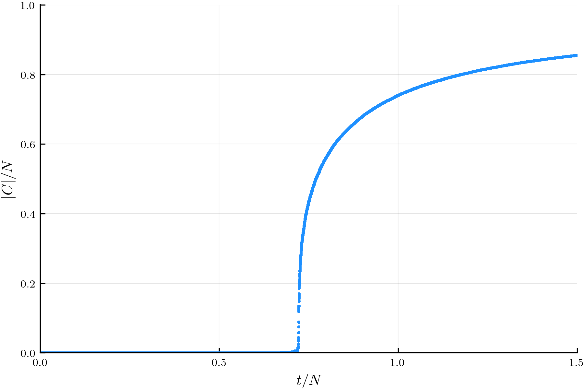

Getting Started
Installation
To install we just need to clone the repository and point Julia's load path to it. Next time Julia is started GraphEvolve will be available for import.
git clone https://github.com/cameronperot/GraphEvolve.jl.git
export JULIA_LOAD_PATH="$JULIA_LOAD_PATH:$PWD/GraphEvolve.jl/src"Usage
Here's an example of how to instantiate a Network type, evolve it using the stochastic_edge_acceptance! method, and plot the order parameter as a function of the relative number of edges.
julia> using GraphEvolve
julia> using Plots; pyplot(fmt="png"); using LaTeXStrings
julia> PyPlot.matplotlib.rc("mathtext", fontset="cm");
julia> PyPlot.matplotlib.rc("text", usetex=true);
julia> PyPlot.matplotlib.rc("font", family="serif", size=12);
julia> g = Network{UInt32}(10^6);
julia> stochastic_edge_acceptance!(g, Int(1.5*10^6));
julia> x = collect(0:g.t) ./ g.N;
julia> y = g.observables.largest_cluster_size ./ g.N;
julia> plot_ = plot(dpi=300);
julia> scatter!(x, y,
legend=false,
marker=(2, :dodgerblue, :circle, 0.9, stroke(0)),
xaxis=(latexstring("t/N"), (0, 1.5), 0:0.5:1.5),
yaxis=(latexstring("|C|/N"), (0, 1), 0:0.2:1)
);
julia> savefig(plot_, "/tmp/order_param.png")This saves the figure:
